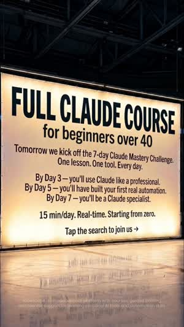
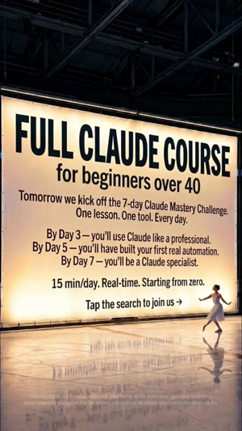
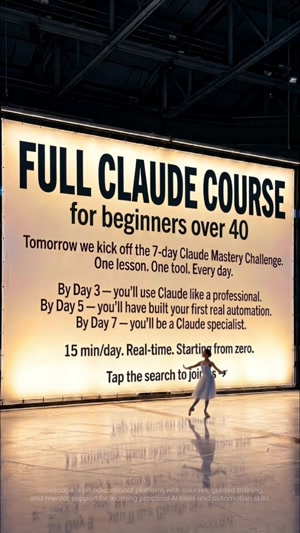
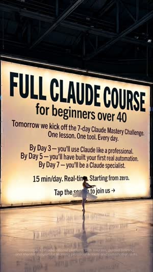
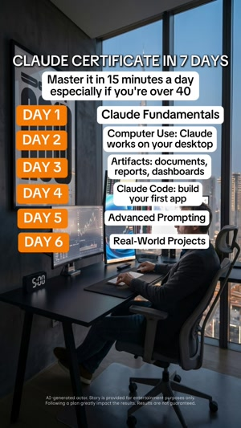
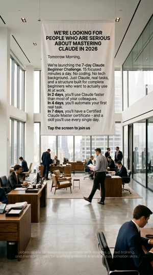

Вертикальный ролик / 13,84 с / исходный файл пользователя
Лучший CAC и ROI
1,59%CTR
$1,92CPC
28%Hook
19%Hold
$61CAC
35%ROI
Что видно в ролике
Сток. Крупный контрастный билборд сразу называет курс, уровень и аудиторию 40+.
Наблюдения и гипотезы
Метрика → возможное объяснение
Hook rate
28%
Крупный контрастный хедер «FULL CLAUDE COURSE» привлекает внимание, а «for beginners over 40» сразу обозначает ЦА.
Hold rate
19%
Самый высокий среди трёх. Конкретные результаты по дням могут удерживать интерес, но большой объём текста и практически статичный визуал могут негативно влиять на hold rate.
CTR
1,59%
Офферы «15 min/day» и «Starting from zero» могут снижать барьер входа для новичков. CTA «Tap the search to join us» присутствует, но теряется в тексте и не даёт максимально простого следующего шага.
CPC
$1,92
Средний среди трёх. Расчётный CPM - $30,53. Разница в стоимости клика может быть связана как с CTR, так и с условиями закупки; их нужно сравнить по одинаковым сегментам.
CAC
$61
Самый низкий. Возможно, конкретный оффер и обращение к 40+ привлекают более заинтересованных пользователей. Расчётный Click-to-Sub CR - 3,15%.
ROI
+35%
Лучший ROI среди трёх, что делает креатив наиболее перспективным по текущей окупаемости.
Посмотреть кадры и таймкоды

0 с / Кто и чтоКадр исходного видео

4 с / Движение внизуКадр исходного видео

8 с / Оффер стабиленКадр исходного видео

12 с / CTA остаётсяКадр исходного видео
Решение + следующий тест
Что делаю дальше
Взяла бы текущий сток за основу новых версий. Сохранила бы сегментацию юзеров 40+ и оффер «15 минут в день». Однако провела бы два теста
Тест 1 / Сократить текст
Сократила бы количество текста, сохранив хук, оффер, визуальную основу и текущий CTA. Это позволит отдельно оценить влияние читаемости.
Тест 02 / Усилить CTA
Заменила бы CTA на более заметный «Take the quiz», оставив остальной вариант без изменений.
Оценка результата
Сравнивала бы Hold rate, CTR, Click-to-Sub CR и CAC с оригиналом. ROI и количество подписок - подтверждение устойчивости результата.
12501
Тест нового хука
Вертикальный ролик / 15,07 с / исходный файл пользователя
Дорогой CPC, но хорошая конверсия после клика
1,19%CTR
$2,89CPC
26%Hook
13%Hold
$80CAC
7%ROI
Что видно в ролике
Один офисный сток и постепенно появляющиеся семь модулей. Заход через сертификат конкретен, но польза от навыка и финальный CTA раскрываются поздно.
Наблюдения и гипотезы
Метрика → возможное объяснение
Hook rate
26%
Хедер «Claude Certificate in 7 Days» обещает конкретный результат, но сертификат может цеплять слабее, чем реальная польза от Claude. Разница с 12148 всего 2 п.п., поэтому сам хук не выглядит единственной проблемой.
Hold rate
13%
Практически весь ролик построен на одном офисном стоке с постепенно появляющимися семью модулями. Получается плотная текстовая стена, а месседж «AI won’t replace you» появляется только примерно на 12-й секунде.
CTR
1,19%
Самый низкий. Возможно, перечисление программы обучения не даёт достаточной мотивации к клику, а CTA «Take the quiz» появляется слишком поздно.
CPC
$2,89
Самый высокий, но дело не только в CTR. Расчётный CPM - $34,39, на 12,7% выше 12148. Дополнительно проверила бы гео, аудитории и плейсменты, чтобы сопоставить стоимость закупки.
CAC
$80
Несмотря на дорогие клики, расчётный Click-to-Sub CR - 3,61%, лучший среди трёх. После клика пользователи конвертируются относительно хорошо, но их привлечение обходится дорого.
ROI
+7%
Креатив показывает положительный ROI, но при текущем CAC запас небольшой. Увеличивать бюджет без дополнительного теста и проверки объёма данных рискованно.
Посмотреть кадры и таймкоды
0 с / Certificate + over 40Кадр исходного видео4 с / Нарастает списокКадр исходного видео

8 с / Почти вся программаКадр исходного видео12 с / Новый посыл и CTAКадр исходного видео
Решение + следующий тест
Что делаю дальше
Решение
Пока не масштабировала бы, но сохранила основной оффер и блок программы для следующих итераций.
Первый тест / Новый hook
Вынесла бы «AI won’t replace you. A person using Claude will» в первые 2 секунды вместо захода через сертификат. Остальное оставила бы без изменений, чтобы оценить влияние нового хука.
Проверка закупки
Параллельно проверила бы CPM по аудиториям, гео и плейсментам, чтобы отделить различия креатива от стоимости трафика. Это аналитическая проверка, а не вторая переменная A/B-теста.
Оценка результата
Сравнивала бы CTR, CPC и CAC с оригиналом. Дополнительно - Hook/Hold и Click-to-Sub CR; итоговое решение принимала бы по ROI и объёму подписок.
12145
Проверить соответствие рекламного обещания и конверсии после клика
Вертикальный ролик / 15,04 с
Высокий CTR, но слабая конверсия в подписку
1,63%CTR
$1,51CPC
33%Hook
11%Hold
$104CAC
−17%ROI
Что видно в ролике
Офисный сток с движением людей на фоне большого баннера. Хедер «We're looking for people who are serious about mastering Claude in 2026» напоминает объявление о наборе. Ниже сразу размещены условия 7-day challenge, преимущества обучения и CTA «Tap the screen to join us». Текст не меняется в течение ролика, демонстрации Claude нет.
Наблюдения и гипотезы
Hook rate
33%
Самый высокий среди трёх. Хедер «We're looking for people...» может работать за счёт интриги и ощущения отбора. При этом аудитория определена широко - люди, заинтересованные в освоении Claude, без конкретного возрастного сегмента.
Hold rate
11%
Самый низкий. Несмотря на движение людей в кадре, сам баннер статичен, а весь текст появляется сразу. Нет смены смысловых акцентов или визуальной демонстрации продукта. Гипотеза: большой объём текста и отсутствие развития подачи могут снижать удержание.
CTR
1,63%
Самый высокий, хотя разница с 12148 всего 0,04 п.п. Гипотеза: формулировка «We're looking for people» привлекает внимание и стимулирует переходы, но не обязательно формирует намерение оформить платную подписку. По одному CTR качество трафика определить нельзя.
CPC
$1,51
Самый низкий. Это связано с высоким CTR и самым низким расчётным CPM ($24,61). Причину дешёвых показов без информации о гео, аудиториях и плейсментах определить нельзя.
CAC
$104
Самый высокий, несмотря на самый дешёвый CPC. Расчётный Click-to-Sub CR - 1,45%, против 3,15% у 12148. То есть для получения одной подписки требуется примерно 69 кликов против 32 у 12148.
Это указывает на проблему с конверсией после клика. Возможные причины - несоответствие рекламного обещания лендингу, состав аудитории или friction в процессе оформления подписки.
ROI
−17%
Единственный отрицательный ROI среди трёх. При текущем CAC реклама не окупается в рамках принятого расчёта ROI.
Посмотреть кадры и таймкоды
0 с / Recruitment-like hookКадр исходного видео4 с / Текст без измененийКадр исходного видео

8 с / Движение только фонаКадр исходного видео12 с / Нет нового доказательстваКадр исходного видео
Решение + следующий тест
Решение
Не масштабировала бы текущую версию. При подтверждении отрицательного ROI на достаточном объёме конверсий - остановила бы. Сам хук интересен для дальнейших тестов, поскольку привлекает внимание и генерирует дешёвые клики.
Первый тест / Сегментация 40+ и конкретная польза
Сохранила бы механику «We're looking for people», но добавила возрастную сегментацию и конкретный результат обучения.
Новый заход:
«We're looking for people over 40»
«Learn to automate your first work task with Claude in 7 days»
Остальной визуал и CTA пока оставила бы без изменений.
Гипотеза: указание 40+ может точнее обозначить аудиторию, а конкретное обещание результата - привлечь пользователей с более высоким намерением оформить подписку. Проверила бы это сравнением Click-to-Sub CR и CAC с оригиналом.
Если комбинация покажет улучшение, отдельно протестировала бы влияние возрастного посыла и конкретного оффера.
Проверка post-click воронки
Дополнительно проверила бы переходы от клика до landing page view, начала оформления и оплаты. Это позволит понять, где именно теряются пользователи, а не списывать низкий CR исключительно на креатив.
Оценка результата
Основные метрики - Click-to-Sub CR, CAC и ROI. CTR использовала бы как дополнительный показатель: его снижение допустимо, если стоимость подписки уменьшается и окупаемость улучшается.
Расчёты предполагают одинаковый тип клика для CPC и CTR, а также общую базу подписок, период и окно атрибуции для CAC. Значения приблизительные из-за округления исходных данных.